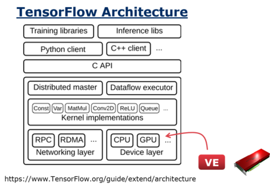
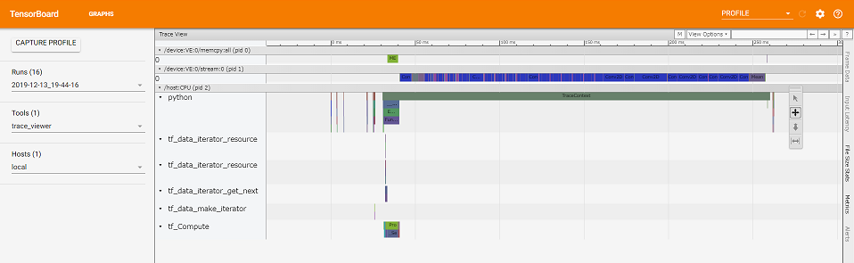

We have updated tensorflow-ve, Tensorflow with SX-Aurora TSUBASA Vector Engine Support. Now it supports tf 2.0 API! We release the prebuilt package. See README_ve.md for install instructions.

Tensorflow-ve supports VectorEngine(VE) as a offload device such as GPU. That means our TF is VE-aware, for example you can see kernels run on VE and data transfer between CPU and VE on a standard profiler in tensorboard.

And our TF includes some kernels that run on VE. Be careful that not all kernels in TF are supported on VE at the moment. Now we support about 200 kernels in thousand of kernels in TF. Since the kernels that VE dose not support run on CPU (you can see it on the profiler), you can run the model including such kernels on SX-Aurora. Since VE is a highest prioity device in current setting of our TF, the kernels supported on VE are automatically executed on VE. In other word, you do not have to rewrite your program at all to use VE.
If you are interested in to accelerate the kernels currenty not supported on VE, let’s try vector programming to implement it!, or let us know. You can see a list of supported kernels on VE as below:
from tensorflow.python.framework import kernels
print([k for k in kernels.get_all_registered_kernels().kernel if k.device_type == "VE"])Some of the VE kernels such as conv2d, batch_normalization support only NCHW, or channels_first, data format for performance reasons. You may have to change your TF program to support this data format before running on SX-Aurora if your program does not already support it. If you use tf.keras, all you need could be adding one line tf.keras.backend.set_image_data_format('channels_first'). See our samples for details such as supporting both data format (NCHW and NHWC).
Kernel Libraries
The VE optimized Kernels are developed in separate repositories vednn and vml. vednn, Vector Engine DNN Library, includes kernels for deep learning such as conv2d. vml, Vector Engine Machine Learning Kernel Library, aims to support other userful kernels for machine learning such as matrix unary, binary and reduction operations. When you write your own kernel, you can find many examples in these repositories.